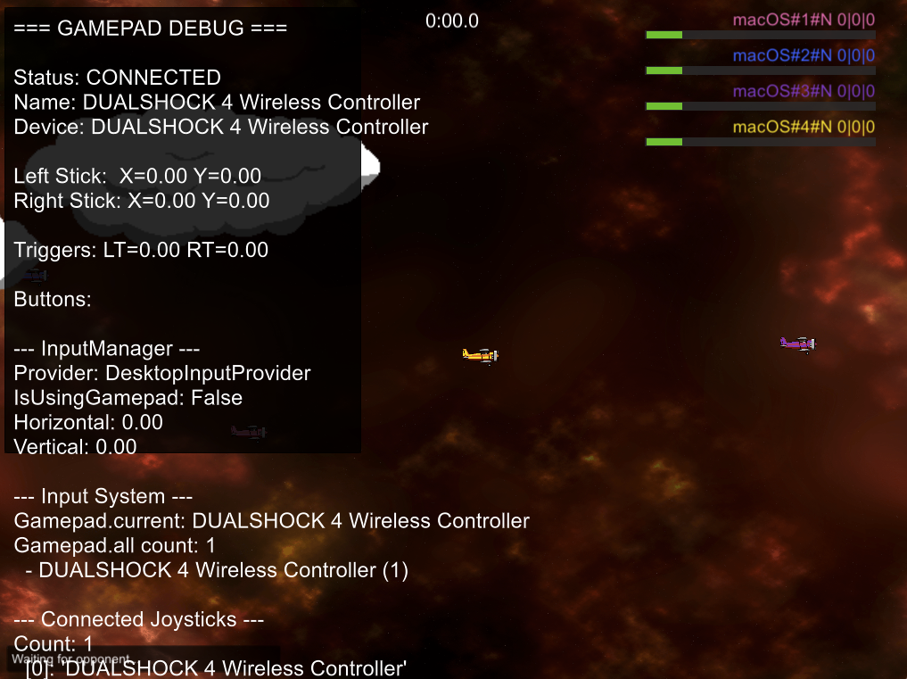

DoodlebugsRevival
Remake klasické arkádové hry v Unity
WindowsmacOSLinuxMobil
Ke stažení
Screenshoty — desktop

Screenshoty — mobil
Zatím bez screenshotů (mobile).
Popis
DoodlebugsRevival je remake klasické arkádové hry, postavený v Unity 6. Plně multiplatformní — desktop (Windows/macOS/Linux) i mobil (Android/iOS).
Nejvyspělejší titul v katalogu co do podpory platforem a buildů.